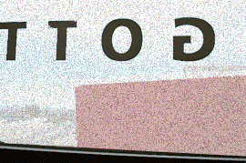

|
|
Ok so this is the "Specials" page. This is where we will post special events, holidays, vacations, special things, special outings, special anything. Basically anything that we deem of "special" quality or worth. So check this page regularly. I think it will prove to be the most interesting. -JD
Well not much is special this week. Except for one thing. MY HERNIA! It miraculously came and went in one day! We have unconfirmed reports that it was caused by bracing myself too much while trying to fight my way home against the whipping wind. I will definitly be taking a leigubill from now on. (BTW that is Icelandic for cab.) I am not declaring myself in remition yet though. The doctors say you should give it at least a year. You know, just to be safe.
|
|
| This is a little illustration I did of The Hernia. I posted it for your viewing pleasure. I thought it might be theraputic to try and deal with the pain by working out exactly what I was experiencing on paper. (I think they call it Art-therapy or something) A nice little drawing don't you think? | |
|
Another thing that is sort of special is that Thanksgiving is just around the corner. We are planning a "Special" Thanksgiving issue. (Well at least I am. Kevin and I are in a disagreement on the correct dates for thanksgiving. But I think we all know when the pilgrims REALLY landed!)
So here is a little recipe to try out courtesy of Robline
my dear sister. It is called Pumpkin Chiffon Pie. Ummm... now
doesn't that sound yummy? So here goes.
|
|
|
The last "special" thing that I can think of that happened this week is that it snowed yesterday. Not just a little slushy rain like the stuff we get in Vancouver but huge fluffy white flakes. It was coming down in droves! It is what I would call a blizzard. Here is what it looked like from outside my window at work. Looks pretty blizzardy, hey!? But like the rest of the weather here it was gone in about an hour and it was sunny and warm for the rest of the day. (Almost tropical!) |
 |
|
That concludes our "specials" of the week. We hope you check back next week when we will feature photos from our Thanksgiving dinner and let you know how that pumpkin chiffon pie went over. If you want to write in your review of the pie or just want to chat I can be reached at thawedOUT!
bless bless (that means bye) |
| thawed | work |
* |
dummytalk | outings | the little things |